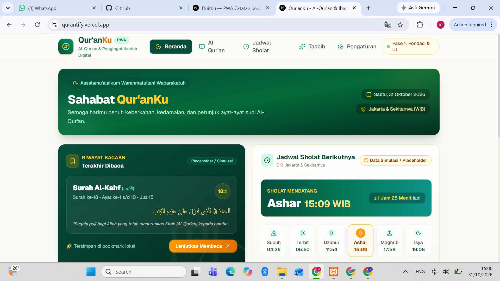
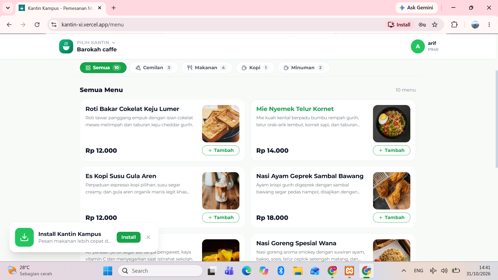
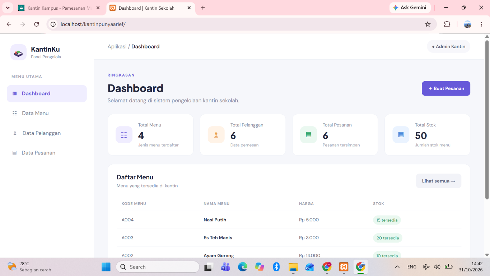
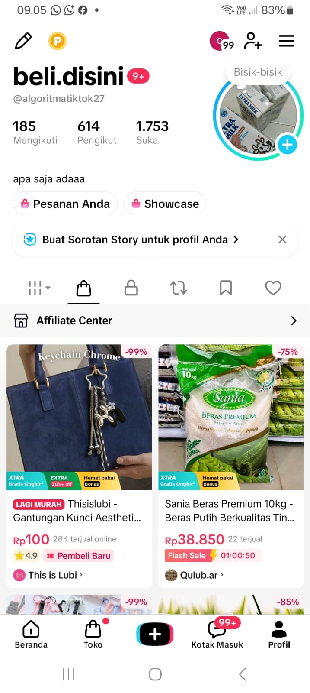

S1 Bisnis Digital
Universitas Al-Irsyad · Fakultas Ekonomi dan Bisnis
Mempelajari keterkaitan antara bisnis, teknologi, pemasaran, dan pemanfaatan media digital.
Personal Portfolio
I'm a Digital Business Student
Mahasiswa Bisnis Digital yang tertarik pada kreativitas, teknologi, dan kewirausahaan. Saya senang mengubah ide menjadi karya, belajar hal baru, dan membangun pengalaman melalui proyek maupun kolaborasi.
01 / About me
Mengenal lebih dekat perjalanan, minat, dan hal-hal yang sedang saya kembangkan.
Halo, saya Muhammad Arief Nur Rohman. Saya percaya bahwa ide yang baik akan menjadi lebih berarti ketika diwujudkan menjadi sesuatu yang bermanfaat.
Saat ini saya menempuh pendidikan S1 Bisnis Digital di Universitas Al-Irsyad. Saya memiliki ketertarikan pada desain visual, pengembangan website, digital marketing, dan pengembangan bisnis. Saya terbiasa mengeksplorasi Canva, CorelDRAW, serta teknologi AI untuk membantu proses kreatif.
Di luar perkuliahan, saya belajar melalui pengalaman organisasi, proyek digital, dan aktivitas kewirausahaan. Bagi saya, setiap proses adalah kesempatan untuk memperluas wawasan dan meningkatkan kemampuan.
02 / Resume
Latar belakang pendidikan dan kemampuan yang terus saya kembangkan.
Mempelajari keterkaitan antara bisnis, teknologi, pemasaran, dan pemanfaatan media digital.
Mengembangkan dasar pengetahuan serta pengalaman melalui kegiatan belajar dan organisasi santri.
Mengembangkan ide visual dan konten digital menggunakan berbagai tools kreatif.
Mempelajari dasar pengembangan website dan teknologi pendukung.
03 / Portfolio
Kumpulan proyek dan eksplorasi yang merepresentasikan minat saya pada teknologi dan bisnis digital.

Aplikasi Al-Qur'an dan pengingat ibadah digital dengan fitur daftar surah, bacaan Al-Qur'an, jadwal salat, tasbih digital, dan pengingat ibadah.

Website pemesanan makanan dan minuman yang menampilkan daftar menu, kategori produk, harga, serta fitur tambah pesanan.

Dashboard pengelola kantin untuk melihat ringkasan data, mengelola menu, pelanggan, pesanan, dan stok dalam satu tampilan.

Eksplorasi pemasaran afiliasi melalui TikTok Shop dengan menampilkan rekomendasi produk, showcase, dan konten promosi agar audiens lebih mudah menemukan produk.
04 / Activities
Pengalaman organisasi dan kegiatan yang membentuk cara saya bekerja, berkomunikasi, dan bertanggung jawab.
MA Al-Fatah Maos. Berkontribusi dalam kegiatan media sekolah dan belajar mengelola tanggung jawab tim.
Himpunan Mahasiswa Digital Talent. Berpartisipasi dalam lingkungan organisasi dan kegiatan kemahasiswaan.
Ketua Organisasi Santri MA Al-Fatah Maos. Belajar memimpin, berkoordinasi, dan menjalankan kegiatan organisasi.
05 / Contact
Terbuka untuk bertukar ide, belajar bersama, berkolaborasi, dan menjalin koneksi baru. Jangan ragu untuk menyapa.
Say Hello